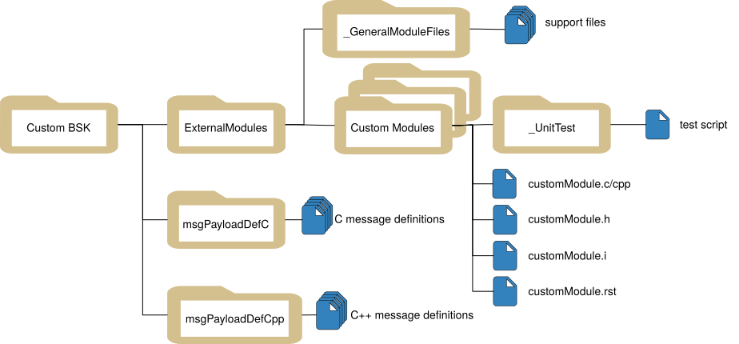

Building Basilisk with External Modules
The external-folder build option creates a customized Basilisk implementation containing both core Basilisk and user-maintained modules. The custom source stays outside the Basilisk repository, but it participates in the same CMake build, Python package, messaging package, and native ABI as core Basilisk.
This is different from a Basilisk Extension. An
Extension is built and distributed independently using bsk-sdk. An external
folder is an input to a from-source Basilisk build and becomes part of that
specific Basilisk installation.
Choose the Right Approach
Important
Use Extensions by default for custom modules and
messages that can be built with the interfaces exported by bsk-sdk.
Extensions are faster to rebuild, can be released independently, and can be
installed alongside a prebuilt Basilisk wheel.
Choose an integrated external-folder build when one or more of the following are required:
custom code needs Basilisk headers, libraries, or implementation details not exported by
bsk-sdk;core and custom code must be compiled and tested with one toolchain and one set of Basilisk build options;
custom messages must be included in the global
Basilisk.architecture.messagingpackage;custom modules must be imported from
Basilisk.ExternalModules; orthe deliverable must be one controlled, customized Basilisk installation or wheel.
The integrated build has corresponding tradeoffs:
a Basilisk source checkout and complete native build toolchain are required;
the custom code is coupled to the selected Basilisk checkout and build configuration;
upgrading Basilisk requires rebuilding and retesting the combined product;
custom-message changes participate in the global message build and can trigger broader regeneration, recompilation, and relinking; and
the custom modules are not distributed as an independent Python package.
Both approaches execute native modules in the Basilisk process. Runtime performance is therefore not normally a reason to prefer the integrated build over an Extension. See Extensions vs. Integrated External Modules for a detailed comparison.
What the Build Produces
Given a Basilisk source checkout and one external project root, the build
system produces a single Basilisk Python package containing:
the selected core Basilisk modules and optional components;
custom modules under
Basilisk.ExternalModules;custom payload types under
Basilisk.architecture.messaging; andgenerated C message interfaces for custom C payloads.
The external source directory remains separate from the Basilisk repository. Only the generated build output is combined. Keeping the source in its own repository avoids local edits inside the Basilisk checkout, but the resulting binary package is still one integrated implementation.
Prerequisites
Before continuing:
Clone Basilisk and prepare a source-build environment by following Building from Source.
Confirm that core Basilisk builds successfully without the external folder.
Create or obtain an external project root with the layout described below.
Follow Basics of Writing Basilisk Modules and the Basilisk module checkout list when implementing and testing each module.
The external project may be stored in a separate repository and placed anywhere
that the build environment can access. An absolute path is the clearest choice
for automated builds; a relative path is resolved from the Basilisk source
directory where conanfile.py is run.
External Project Layout
The external project root can have any name. The directories inside it use fixed names because the Basilisk build discovers them automatically:
External/
|-- ExternalModules/
| |-- CustomCppModule/
| | |-- customCppModule.h
| | |-- customCppModule.cpp
| | |-- customCppModule.i
| | `-- _UnitTest/
| |-- CustomCModule/
| | |-- customCModule.h
| | |-- customCModule.c
| | |-- customCModule.i
| | `-- _UnitTest/
| `-- _GeneralModuleFiles/
|-- msgPayloadDefC/
`-- msgPayloadDefCpp/
The same layout is illustrated below.

ExternalModulesRequired. Each child directory contains one normal Basilisk C or C++ module, including its SWIG interface and tests. The directory name must be exactly
ExternalModules.ExternalModules/_GeneralModuleFilesOptional. Place C, C++, header, and SWIG support files shared by multiple external modules here. The files must be directly inside
_GeneralModuleFiles; nested support directories are not discovered by the standard build.msgPayloadDefCOptional. Contains C-compatible payload headers named
<MessageName>MsgPayload.h.msgPayloadDefCppOptional. Contains C++ payload headers using the same
<MessageName>MsgPayload.hnaming convention.
All module target names and message payload names must be unique across core Basilisk and the external project. Because this is one combined build, a name collision is not isolated by a separate Python package namespace.
Build the Customized Basilisk
Run the build from the Basilisk source root and pass the path to the external
project root, not its parent directory. For the layout above, the argument must
point to External:
python3 conanfile.py \
--clean \
--pathToExternalModules "../External"
The first build should use --clean so CMake configures the complete set of
core modules, external targets, custom messages, and optional Basilisk
components together.
The external option can be combined with normal Basilisk build options. For example:
python3 conanfile.py \
--clean \
--mujoco True \
--opNav False \
--pathToExternalModules "/absolute/path/to/External"
The resulting IDE project or command-line build contains an
ExternalModules group in addition to the selected core Basilisk targets.
Verify the Build
Confirm that Python imports the customized Basilisk build rather than another installed copy:
python -c "import Basilisk; print(Basilisk.__file__)"
Import an external module and its generated messages:
from Basilisk.ExternalModules import customCppModule
from Basilisk.architecture import messaging
module = customCppModule.CustomCppModule()
payload = messaging.CustomModuleMsgPayload()
print(module)
print(payload)
Run the external module tests from the Basilisk source root:
python -m pytest \
../External/ExternalModules/CustomCppModule/_UnitTest/ \
../External/ExternalModules/CustomCModule/_UnitTest/ \
-v
Run the broader Basilisk test suite before distributing the combined build. The external code shares core libraries and messages, so module-only tests are not sufficient release validation.
Incremental and Clean Rebuilds
After the initial configuration, ordinary changes to a module .c, .cpp,
or header file can normally use the same build command without --clean.
CMake then rebuilds the affected targets:
python3 conanfile.py \
--pathToExternalModules "../External"
Use a clean rebuild after changing the external root, changing important build options, or when generated files and build configuration may be stale:
python3 conanfile.py \
--clean \
--pathToExternalModules "../External"
Changing a custom payload has a larger build impact than changing ordinary module implementation code. The payload participates in the combined message generation pipeline, and its generated bindings and C interfaces become part of core messaging libraries. CMake rebuilds the affected generated sources, libraries, and dependent modules. This can be substantially slower than rebuilding an Extension-owned message, but it does not imply that every source file is always recompiled.
Custom Messages
Place C payloads in msgPayloadDefC and C++ payloads in
msgPayloadDefCpp. Use normal Basilisk payload conventions and include them
from external modules through the combined source paths, for example:
#include "msgPayloadDefC/CustomModuleMsgPayload.h"
After the build, import the generated Python types from the global messaging package:
from Basilisk.architecture import messaging
payload = messaging.CustomModuleMsgPayload()
message = messaging.CustomModuleMsg().write(payload)
Because the types enter the global package, avoid names that collide with core Basilisk messages or other external payloads. A message rename or layout change is an ABI change for every custom module that consumes that payload; rebuild and retest the complete customized Basilisk package.
Build a Customized Wheel
To distribute one customized Basilisk wheel, pass the external-folder option
through CONAN_ARGS while building from the Basilisk source root:
CONAN_ARGS="--clean --pathToExternalModules='/absolute/path/to/External'" \
python -m pip wheel --no-deps -v .
Install and test the resulting bsk-*.whl in a clean environment before
distribution. A customized wheel uses the same bsk distribution name as
the official Basilisk package, so publish it only to a controlled internal
index or artifact store with clear provenance. Do not publish a customized
build as the official public Basilisk release.
If custom modules should instead have their own package name, wheel, version, and release lifecycle, implement them as Extensions.
Update to a New Basilisk Version
An external project is source-separated but build-coupled to Basilisk. When updating Basilisk:
Check out the intended Basilisk tag or commit.
Review core API, message, compiler, and dependency changes affecting the external project.
Perform a clean integrated build with
--pathToExternalModules.Run all external module tests and the applicable Basilisk regression tests.
Build and validate a new customized wheel or installation artifact.
Do not assume a previously compiled external module can be copied into a newer Basilisk installation. Rebuild it with the selected source checkout.
Troubleshooting
Basilisk.ExternalModulesdoes not contain the moduleConfirm that
--pathToExternalModulespoints to the root containing the exactExternalModulesdirectory. Verify that the module has a SWIG.ifile, rerun configuration, and inspect the build output for the target name.- A custom message is missing from
Basilisk.architecture.messaging Confirm that its header is directly under
msgPayloadDefCormsgPayloadDefCppand ends inMsgPayload.h. Check for a name collision and perform a clean rebuild after correcting the layout.- Python imports a different Basilisk installation
Print
Basilisk.__file__and verify that the active environment points to the newly built package. Avoid mixing a PyPI-installedbskwith the integrated source build in the same environment.- A small message edit causes a large rebuild
This is expected when generated message bindings, messaging libraries, and dependent modules must be rebuilt. Use an Extension if message ownership and fast isolated rebuilds are more important than global message integration.
- The build cannot find a third-party header or library
Add a narrowly scoped
Custom.cmakefor the affected module and confirm that the dependency is available on every target platform. Avoid modifying core Basilisk CMake files for project-specific dependencies.